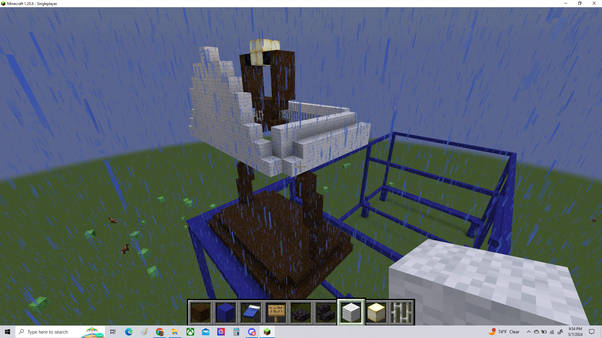
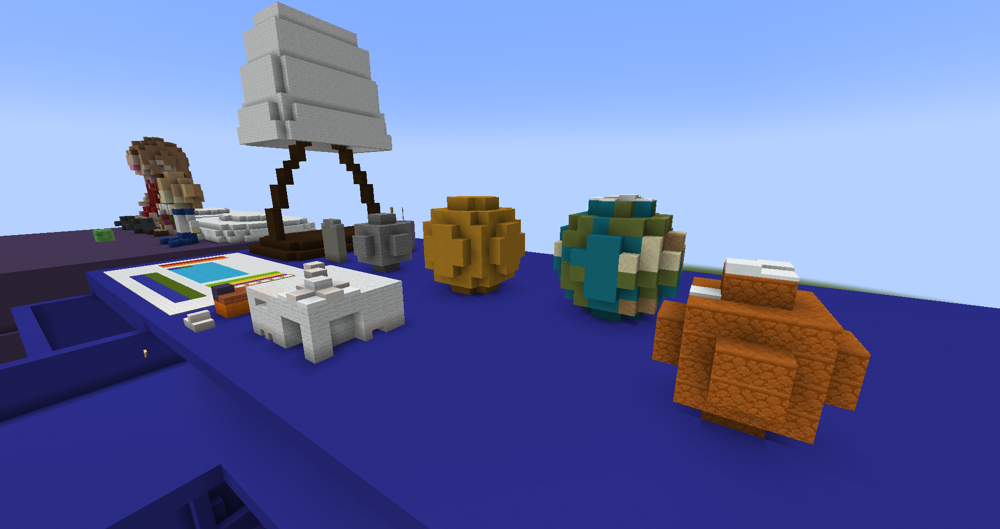
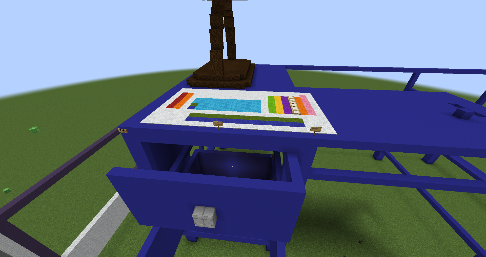
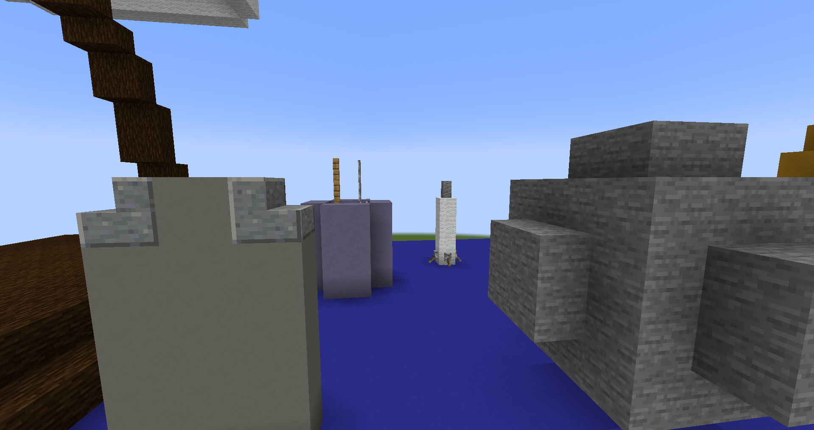

This art project is titled "My Room" because it is a digital recreation of my bedroom in the game Minecraft. My original plan for the art piece was to create a fully enclosed room with many different decorations on the walls, however due to time constraints I had to cut some corners from my original plan (no pun intended). What I was able to finish was part of my dresser drawer and my bed, with a few trinkets adorning both. Here are some screenshots that showcase my work!
  Here are some works in progress of my project.
On my desk is a rocket-shaped pen. It means a lot to me because it was given to me by a coworker of my mom who said I'd be someone big someday. I intend to prove him right.
Some more of my desk. I included a lamp, a stick of deodorant, a pencil holder, some puzzles of the planets I have, a periodic table poster, and multiple replicas of my replica 3D prints I had made of the Tech Museum.
These are plushies I own on top of my bed that I have collected over the years. They consist of Meiko (Vocaloid), Mari Makinami from Neon Genesis Evangelion, and Lumi from Lumi and the Great Big Galaxy.